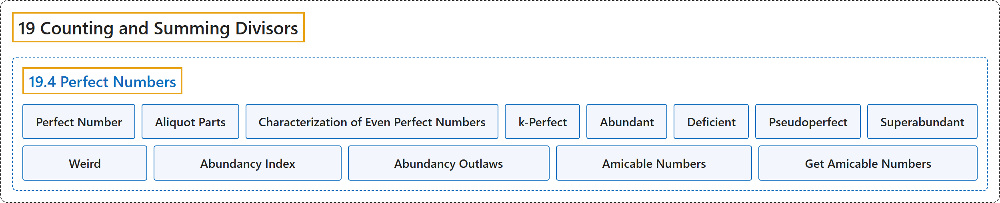

19.4 Perfect Numbers
Classification

Glossary
| Term | Definition | 中文翻译 | Source |
|---|---|---|---|
| 19.4 Perfect Numbers 完全数 |
(No definition) | （无定义） | Crisman, 2024, section 19.4 |
| Perfect Number 完全数 |
"When the ratio \(\frac{\sigma(n)}{n}\) is exactly \(2\), we say \(n\) is a perfect number." | 当比值 \(\frac{\sigma(n)}{n}\) 恰好为 \(2\) 时，就说 \(n\) 是完全数。 | Crisman, 2024, Definition 19.4.1 |
| Aliquot Parts 真因数（aliquot parts） |
"It is easy to see this is the same thing as \(n\) being the sum of all of its proper divisors" | 容易看出，这等同于 \(n\) 是它所有真因数之和 | Crisman, 2024, subsection 19.4.1 |
| Characterization of Even Perfect Numbers 偶完全数的刻画 |
"If \(N\) is an even number, it is perfect if and only if it is the product of a power \(2^{n-1}\) and a prime of the form \(2^n-1\) (for the same \(n\))." | 若 \(N\) 是偶数，则它是完全数，当且仅当它是一个幂 \(2^{n-1}\) 与一个形如 \(2^n-1\) 的素数之积（\(n\) 相同）。 | Crisman, 2024, Theorem 19.4.3 |
| k-Perfect k-完全数 |
"Recall that if \(\sigma(n)=2n\), then \(n\) is perfect. If \(\sigma(n)=kn\) for some integer \(k\), then we say that \(n\) is \(k\)-perfect. Or, if \(\sigma(n)>2n\), then \(n\) is abundant. If \(\sigma(n)<2n\), we say \(n\) is deficient." | 回忆一下，若 \(\sigma(n)=2n\)，则 \(n\) 是完全数。若对某个整数 \(k\) 有 \(\sigma(n)=kn\)，就说 \(n\) 是 \(k\)-完全数。或者，若 \(\sigma(n)>2n\)，则 \(n\) 是过剩数。若 \(\sigma(n)<2n\)，就说 \(n\) 是亏数。 | Crisman, 2024, Definition 19.4.4 |
| Abundant 过剩数 |
"Recall that if \(\sigma(n)=2n\), then \(n\) is perfect. If \(\sigma(n)=kn\) for some integer \(k\), then we say that \(n\) is \(k\)-perfect. Or, if \(\sigma(n)>2n\), then \(n\) is abundant. If \(\sigma(n)<2n\), we say \(n\) is deficient." | 回忆一下，若 \(\sigma(n)=2n\)，则 \(n\) 是完全数。若对某个整数 \(k\) 有 \(\sigma(n)=kn\)，就说 \(n\) 是 \(k\)-完全数。或者，若 \(\sigma(n)>2n\)，则 \(n\) 是过剩数。若 \(\sigma(n)<2n\)，就说 \(n\) 是亏数。 | Crisman, 2024, Definition 19.4.4 |
| Deficient 亏数 |
"Recall that if \(\sigma(n)=2n\), then \(n\) is perfect. If \(\sigma(n)=kn\) for some integer \(k\), then we say that \(n\) is \(k\)-perfect. Or, if \(\sigma(n)>2n\), then \(n\) is abundant. If \(\sigma(n)<2n\), we say \(n\) is deficient." | 回忆一下，若 \(\sigma(n)=2n\)，则 \(n\) 是完全数。若对某个整数 \(k\) 有 \(\sigma(n)=kn\)，就说 \(n\) 是 \(k\)-完全数。或者，若 \(\sigma(n)>2n\)，则 \(n\) 是过剩数。若 \(\sigma(n)<2n\)，就说 \(n\) 是亏数。 | Crisman, 2024, Definition 19.4.4 |
| Pseudoperfect 半完全数 |
"Here are some less well-known, but nonetheless interesting, terms. A number is pseudoperfect if it is the sum of some of its divisors (other than itself). A number \(n\) is superabundant if the ratio \(\sigma(n)/n\) for \(n\) is bigger than the value of the ratio for all smaller \(m\lt n\). A number is weird if it is abundant but not pseudoperfect." | 下面是一些不太为人所知但仍有意思的术语。若一个数是它的某些因数（不含它自身）之和，就称为半完全数。若 \(n\) 的比值 \(\sigma(n)/n\) 大于所有更小的 \(m\lt n\) 的比值，就称 \(n\) 为高过剩数。若一个数是过剩数但不是半完全数，就称为奇异数。 | Crisman, 2024, Definition 19.4.5 |
| Superabundant 高过剩数 |
"Here are some less well-known, but nonetheless interesting, terms. A number is pseudoperfect if it is the sum of some of its divisors (other than itself). A number \(n\) is superabundant if the ratio \(\sigma(n)/n\) for \(n\) is bigger than the value of the ratio for all smaller \(m\lt n\). A number is weird if it is abundant but not pseudoperfect." | 下面是一些不太为人所知但仍有意思的术语。若一个数是它的某些因数（不含它自身）之和，就称为半完全数。若 \(n\) 的比值 \(\sigma(n)/n\) 大于所有更小的 \(m\lt n\) 的比值，就称 \(n\) 为高过剩数。若一个数是过剩数但不是半完全数，就称为奇异数。 | Crisman, 2024, Definition 19.4.5 |
| Weird 奇异数 |
"Here are some less well-known, but nonetheless interesting, terms. A number is pseudoperfect if it is the sum of some of its divisors (other than itself). A number \(n\) is superabundant if the ratio \(\sigma(n)/n\) for \(n\) is bigger than the value of the ratio for all smaller \(m\lt n\). A number is weird if it is abundant but not pseudoperfect." | 下面是一些不太为人所知但仍有意思的术语。若一个数是它的某些因数（不含它自身）之和，就称为半完全数。若 \(n\) 的比值 \(\sigma(n)/n\) 大于所有更小的 \(m\lt n\) 的比值，就称 \(n\) 为高过剩数。若一个数是过剩数但不是半完全数，就称为奇异数。 | Crisman, 2024, Definition 19.4.5 |
| Abundancy Index 丰度指数 |
"The ratio \(\frac{\sigma(n)}{n}\) may be called the abundancy index of \(n\)." | 比值 \(\frac{\sigma(n)}{n}\) 可以称为 \(n\) 的丰度指数。 | Crisman, 2024, Definition 19.4.7 |
| Abundancy Outlaws 丰度不法数 |
"Holdener and Stanton picturesquely call rational numbers which are not abundancies abundancy outlaws." | Holdener 和 Stanton 形象地把不是丰度指数的有理数称为丰度不法数。 | Crisman, 2024, subsection 19.4.3 |
| Amicable Numbers 亲和数 |
"A pair of positive integers \(m,n\) such that \(\sigma(n)=\sigma(m)=m+n\) is called a pair of amicable numbers." | 满足 \(\sigma(n)=\sigma(m)=m+n\) 的一对正整数 \(m,n\) 称为一对亲和数。 | Crisman, 2024, Definition 19.4.11 |
| Get Amicable Numbers 求亲和数 |
"Here is one way to get amicable numbers. Make a list of numbers of the form \(p_n=3\cdot 2^n-1\) and \(q_n=9\cdot 2^{2n-1}-1\). Then check if \(p_{n-1}\), \(p_n\), and \(q_n\) are all prime. If so, then \(2^np_{n-1}p_n\) and \(2^nq_n\) are an amicable pair." | 下面是得到亲和数的一种方法。列出形如 \(p_n=3\cdot 2^n-1\) 和 \(q_n=9\cdot 2^{2n-1}-1\) 的数。然后检验 \(p_{n-1}\)、\(p_n\) 和 \(q_n\) 是否都是素数。若是，则 \(2^np_{n-1}p_n\) 与 \(2^nq_n\) 是一对亲和数。 | Crisman, 2024, Algorithm 19.4.14 |
References
Crisman, K.-D. (2024). Number theory: In context and interactive (June 26, 2024 edition). Gordon College. Retrieved October 29, 2026, from https://math.gordon.edu/ntic/ntic/